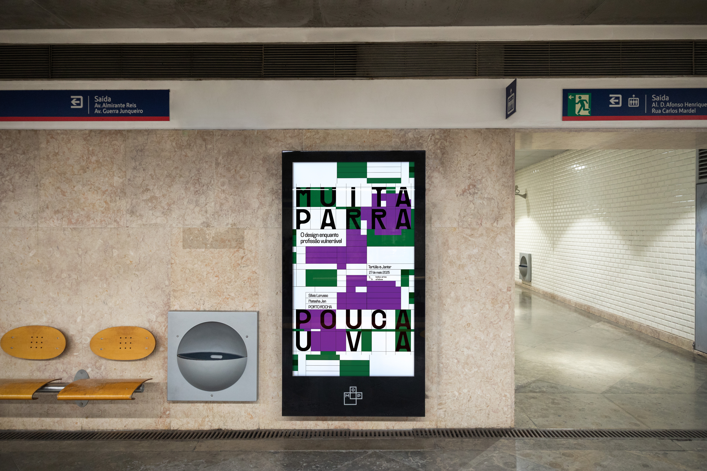
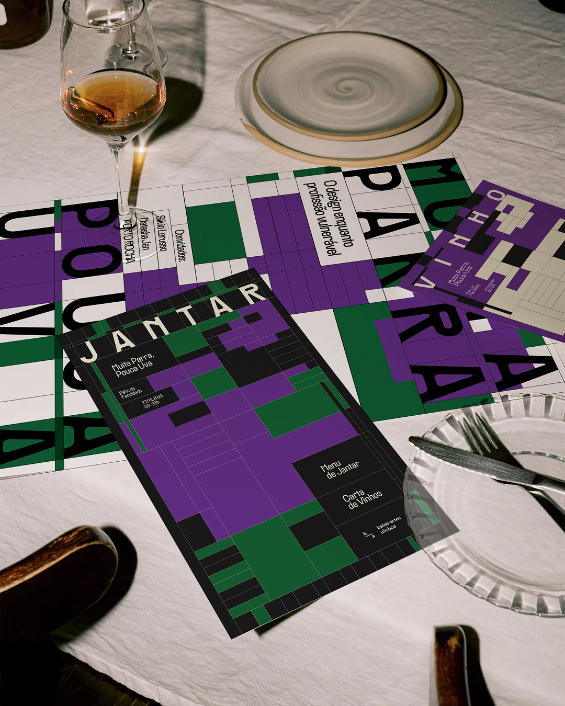
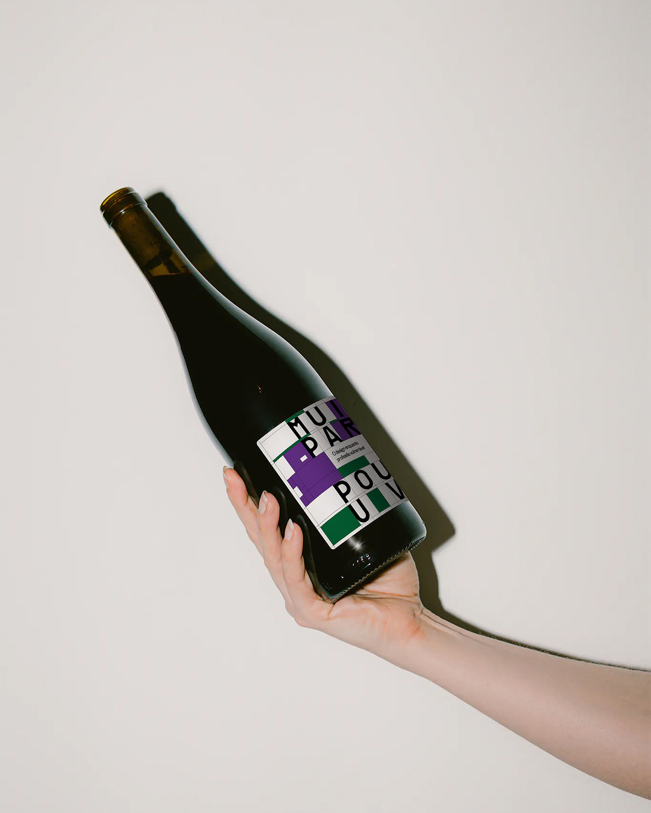
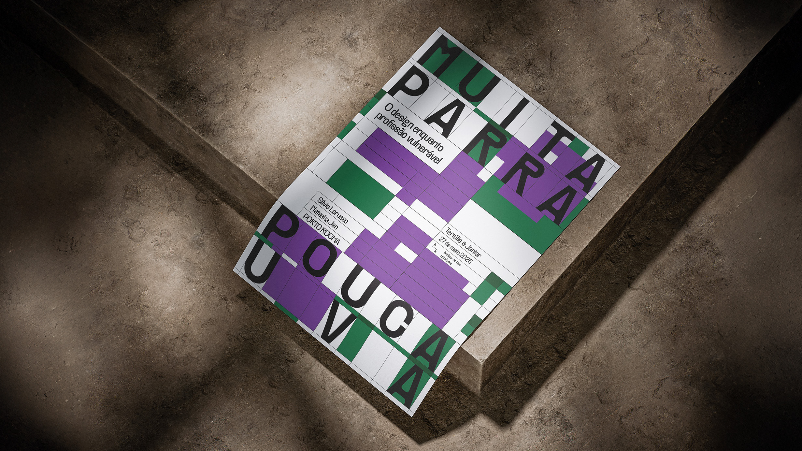
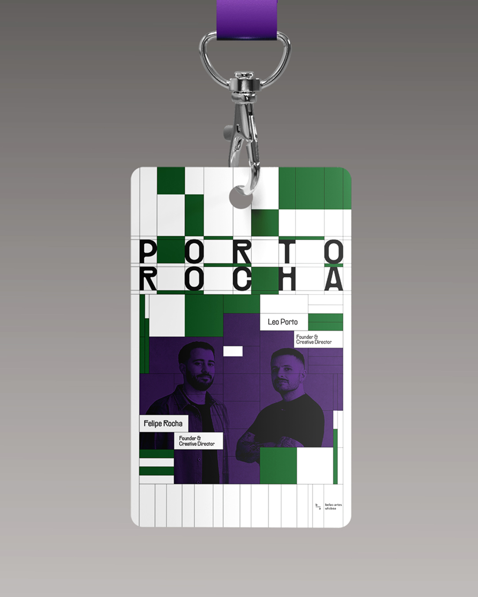
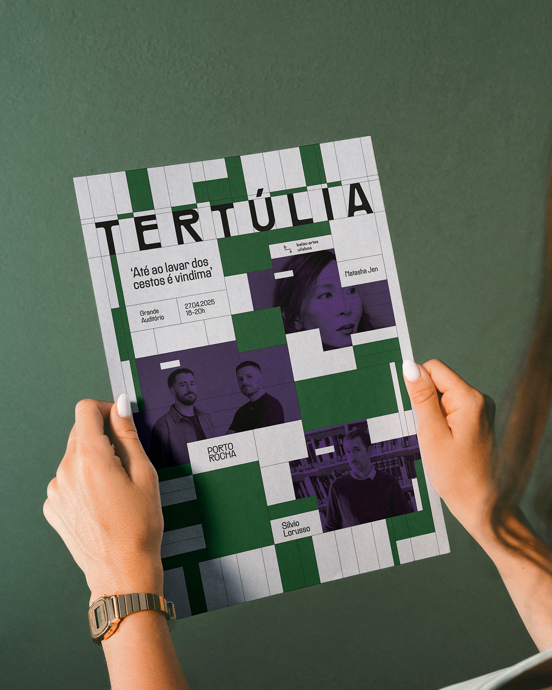

[Proj. 04]
IDENTITY, 2024
Creative Direction & Design
Mariana Esteves, Bernard Gerber, Pedro Matos
Context
Developed at the Faculty of Fine Arts, University of Lisbon
“Muita Parra, Pouca Uva” is a Portuguese saying, literally "a lot of vine, little grape", describing putting in too much effort with little reward in return.
It was the guiding theme for imagining a fictitious lecture around “The Designer as a Worker”: a talk about design as a vulnerable and undervalued profession that deserves to assert itself and claim its space.
Developing a solid visual language for said lecture was the focus of this project. With the visual theme of Excel grids, the identity strikes a balance between a bureaucratic, systemic language with a touch of irony — stemming from the green and purple colors, which reference the grape in the title — and informality, conveyed through the PP Rader typeface, condensed but with a unique personality.
[Proj. 04]
[IMG]






[IMG]